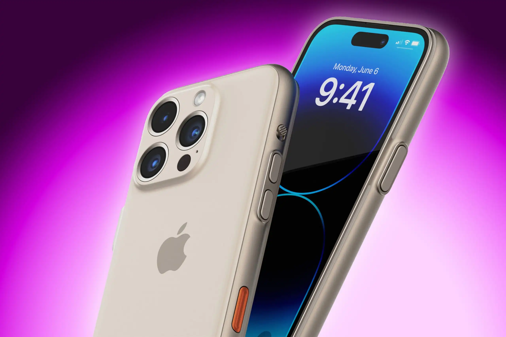

Telefono mugikor bat, mugikorra ere esaten zaiona, kablerik ez duena da, eta lekuz alda daiteke, komunikazioan eragozpenik erregistratu gabe. Telefono mota horren funtzionamendua irrati-uhinen bidez ematen da, telefonia mugikorraren sarea osatzen duten antenetara sartzeko.
